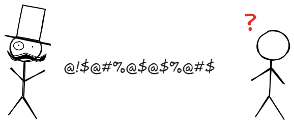

1 언어
1.1 언어
언어(言語, Language)1에 대한 정의는 여러 가지 시도가 있었다. 아래는 그러한 예의 일부이다.
사람들이 자신의 생각을 다른 사람들에게 나타내고 전달하기 위해 사용하는 체계.
사물, 행동, 생각, 그리고 상태를 나타내는 체계.
사람들 사이에 공유되는 의미들의 체계.
문법적으로 맞는 말의 집합.
언어 공동체 내에서 이해될 수 있는 말의 집합.

만약 두 대상이 사용하는 언어가 다르다면 어떻게 의사소통을 할 수 있을까요? 공통 언어를 사용하거나 한쪽에서 다른 쪽 언어를 배워 이야기 나눌 수 있을 듯 합니다.
또 다른 방법은 누군가 말을 번역해 줄 수도 있습니다.
1.2 프로그래밍 언어
사람과 컴퓨터 사이에서 같은 상황이 발생합니다. 사람이 하는 말을 컴퓨터가 이해할 수 없기 때문에 누군가 컴퓨터가 알 수 있도록 번역이 필요합니다.

이렇게 사람이 요청한 내용을 번역해서 컴퓨터에게 전달하는, 즉 번역가 역할을 하는 것이 인터프리터, 컴파일러입니다. 개발자가 프로그래밍 언어를 이용하여 코딩을 하게 되면 인터프리터나 컴파일러가 컴퓨터가 이해할 수 있는 기계어로 번역합니다.
1.2.1 프로그래밍 언어 순위
프로그래밍 언어 순위는 티오베 지수(TIOBE Index)2로 확인할 수 있습니다.

1.3 파이썬

Python(파이썬)3은 1991년에 귀도 반 로섬(Guido van Rossum)에 의해 처음 개발된 고급 프로그래밍 언어입니다. Python은 그 문법이 간단하고, 읽기 쉽고, 학습하기 쉬운 특징을 가지고 있어 초보자부터 전문가까지 폭넓게 사용됩니다. 다양한 분야에서 사용되며, 특히 데이터 과학, 웹 개발, 자동화, 인공지능 등의 분야에서 인기가 많습니다.
1.3.1 Python의 특징
파이썬 주요 특징은 다음과 같습니다.
간결하고 읽기 쉬운 문법
- Python은 코드가 직관적이고 가독성이 뛰어납니다. 이는 Python이 첫 프로그래밍 언어를 배우려는 사람들에게 인기가 있는 이유 중 하나입니다.
- 코드 블록은 중괄호
{}대신 들여쓰기로 구분됩니다.
동적 타이핑(Dynamically Typed)
- 변수의 데이터 타입을 명시하지 않아도 됩니다. 예를 들어,
x = 10과 같은 방식으로 변수에 값을 할당할 수 있으며, 이후 다른 타입의 값도 할당 가능합니다.
x = 10 # 정수 x = "Hello" # 문자열- 변수의 데이터 타입을 명시하지 않아도 됩니다. 예를 들어,
객체 지향(OOP) 지원
- Python은 객체 지향 프로그래밍을 지원합니다. 클래스와 객체를 사용해 코드의 재사용성과 유지보수성을 높일 수 있습니다.
다양한 라이브러리와 프레임워크
- Python은 수많은 라이브러리와 프레임워크가 존재하여, 다양한 작업을 쉽게 처리할 수 있습니다.
- 예: NumPy, Pandas (데이터 분석), Django, Flask (웹 개발), TensorFlow, PyTorch (머신러닝), Matplotlib (그래프 작성)
인터프리터 언어
- Python은 인터프리터 언어로, 코드를 실행하기 위해 별도의 컴파일 과정이 필요하지 않습니다. 코드가 실행될 때마다 바로 해석되어 실행됩니다.
크로스 플랫폼
- Python은 여러 운영 체제(Windows, macOS, Linux 등)에서 실행할 수 있습니다. 이는 Python이 크로스 플랫폼 언어로 설계되었기 때문입니다.
동시성(Concurrency) 지원
- Python은 멀티스레딩, 멀티프로세싱 등 동시성 처리를 위한 다양한 방법을 제공합니다.
대화형 인터프리터
- Python은 대화형 인터프리터(REPL)를 제공하여, 코드를 작성하면서 바로 실행 결과를 확인할 수 있습니다.
1.3.2 Python의 주요 용도
파이썬 주요 용도는 다음과 같으며 모바일 응용프로그램 개발에 한계가 있습니다.
- 웹 개발
- Django, Flask와 같은 프레임워크를 사용하여 서버 사이드 웹 애플리케이션을 개발할 수 있습니다.
- 데이터 분석 및 과학
- Pandas, NumPy, SciPy와 같은 라이브러리를 사용하여 데이터를 처리하고 분석할 수 있습니다.
- Matplotlib, Seaborn 등을 사용해 시각화를 할 수 있습니다.
- 인공지능 및 머신러닝
- TensorFlow, Keras, PyTorch와 같은 라이브러리를 통해 머신러닝 및 딥러닝 모델을 구축할 수 있습니다.
- 자동화 및 스크립팅
- Python은 시스템 관리 작업, 파일 처리, 웹 스크래핑 등 자동화 작업을 매우 쉽게 할 수 있는 언어입니다.
- 게임 개발
- Pygame과 같은 라이브러리를 사용하여 간단한 2D 게임을 개발할 수 있습니다.
- 네트워크 프로그래밍
- Python은 소켓 프로그래밍을 통해 네트워크 애플리케이션을 만들 수 있습니다.
1.3.3 Python의 장단점
파이썬 주요 장단점은 다음과 같습니다.
- 장점
-
- 배우기 쉬움: Python은 매우 직관적이고 간단한 문법을 제공하여 초보자에게 적합합니다.
- 광범위한 커뮤니티와 지원: 전 세계적으로 많은 개발자들이 사용하고 있어, 다양한 질문과 답변을 찾을 수 있는 큰 커뮤니티가 있습니다.
- 빠른 개발 속도: 라이브러리와 도구들이 풍부해 많은 일을 빠르게 처리할 수 있습니다.
- 단점
-
- 속도: Python은 인터프리터 언어이기 때문에 컴파일된 언어보다 실행 속도가 느릴 수 있습니다. 하지만 성능이 중요한 부분에서는 C, C++와 같은 언어와 연동하여 사용하거나, Cython, PyPy 같은 최적화 도구를 사용할 수 있습니다.
- 멀티스레딩: Python은 Global Interpreter Lock(GIL)로 인해 진정한 멀티스레딩을 지원하지 않습니다. 멀티스레딩을 많이 사용하는 경우 다른 방법을 찾아야 할 수 있습니다.
파이썬 설치는 8.1 내용을 참고한다.